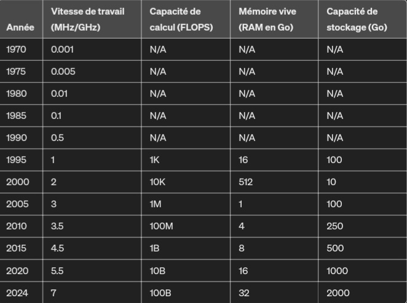

![Colossus]()


![]()
Les ordinateurs et leur évolution:
Les premiers microprocesseurs

Le 4004 d'Intel est le premier microprocesseur commercialisé,
c'est-à-dire la première intégration réussie d'une grande partie des
fonctions d'un processeur sur un seul et unique circuit intégré.
Avec une puissance d'exécution de 92 600 opérations par seconde à
une fréquence maximale de 740 kHz3, il est d'une puissance
comparable à l'ENIAC, le premier ordinateur moderne dévoilé en 1945,
qui occupait 167 m2 pour un poids total de 30 t.
ZX 81
Le Sinclair ZX81 est un ordinateur personnel 8 bits, conçu par Sinclair Research
et commercialisé par Timex Corporation en mars 1981. Le boîtier était noir avec
un clavier à membrane ; l'apparence distinctive de la machine venait du travail
du designer industriel Rick Dickinson. Cet ordinateur à prix réduit, basé sur
un microprocesseur Zilog Z80A cadencé à 3,25 MHz possédait 1 ko de
mémoire vive pour les programmes et l'affichage. Celui-ci se faisait en
noir et blanc (24 lignes de 32 caractères) sur un téléviseur standard.
L'ordinateur ne possédait pas de sortie son.

Les premiers ordinateurs familiaux:
Le commodore 64
Le Commodore 64 est un ordinateur personnel conçu par Commodore
Business Machines Inc. en 1982, sous l'égide de Jack Tramiel. Il fut la
première machine vendue à plusieurs millions d'exemplaires (de 17 à 25
millions selon les estimations), et il reste le modèle d'ordinateur
personnel le plus vendu à ce jour, selon le Livre Guinness des records.
Le Commodore 64 utilise un microprocesseur 8 bits 6510 et dispose de
64 kilooctets de mémoire vive. La puce graphique, VIC-II, fournit une
résolution de 320×200 en 16 couleurs, huit sprites, des capacités de
défilement des interruptions en fonction de la position dans le balayage
de l'écran, et deux modes graphiques bitmap.

Évolution des caractéristiques des ordinateurs
2. Les languages de programation:
1951 à 1960
Dans les années 1950, les trois premiers langages de programmation modernes ont été conçus :
•FORTRAN, le traducteur de formules (FORmula TRANslator), inventé par John Backus.
•LISP, spécialisé dans le traitement des listes (LISt Processor), inventé par John McCarthy.
•COBOL, spécialisé dans la programmation d'application de gestion (COmmon Business Oriented Language),
créé par le Short Range Committee dans lequel on retrouve entre autres Grace Hopper.
1967 à 1978
La période courant de la fin des années 1960 au début des années 1970 a vu un véritable foisonnement des langages de programmation. La plupart des paradigmes des principaux langages sont inventés durant cette période :
•Simula 67, inventé par Nygaard et Dahl comme surcouche d'Algol 60, est le premier langage conçu pour pouvoir intégrer la programmation orientée objet et la simulation par événements discrets.
•C, un des premiers langages de programmation système, est développé par Dennis Ritchie et Ken Thompson pour le développement d'Unix aux laboratoires Bell entre 1969 et 1973.
•Smalltalk (milieu des années 1970) est l'un des premiers langages de programmation à disposer d'un environnement de développement intégré complètement graphique.
•Prolog (PROgrammation LOGique), défini en 1972 par Colmerauer, Roussel et Kowalski (en) est le premier langage de programmation logique.
•ML (Meta Language) inventé par Robin Milner en 1973, construit sur un typage statique fort et polymorphe au-dessus de Lisp, pionnier du langage de programmation généraliste fonctionnel.
1980
Les années 1980 ont également apporté des progrès dans la mise en œuvre des langages de programmation.
Le mouvement RISC dans l'architecture des ordinateurs a postulé que le matériel devait être conçu pour
faciliter l'écriture des compilateurs plutôt que pour les programmeurs en assembleur. Aidés par les progrès en
vitesse des processeurs qui a permis des améliorations de plus en plus agressives des techniques de compilation,
le mouvement RISC a permis des évolutions dans la technologie de compilation des langages de haut niveau
jusque dans les années 1990.
•1983 - Ada
•1983 - C++
•1985 - Eiffel
•1987 - Perl
•1989 - FP (Backus)
1990
Les nouveaux langages de scripts, héritiers des langages de commande intégrés dans les systèmes d'exploitation, ont une approche plus novatrice parce qu'ils sont interprétés. Certains sont intégrés dans des pages Web. Ils présentent de nouvelles caractéristiques syntaxiques et de nouvelles fonctionnalités leur sont incorporées de manière à faciliter l'enchaînement de commandes simples. Ils fonctionnent bien quand les programmes sont petits. Les programmes plus gros sont plus difficiles à mettre en œuvre et à maintenir que des programmes compilés analogues.
1990 - Haskell
•1991 - Python
•1993 - Ruby
•1993 - Lua
•1994 - ANSI Common Lisp
•1995 - JavaScript
•1995 - Java
•1995 - PHP
•2000 - C#
2010 et 2020
Sûreté - Les années 2010 tendent vers des langages plus sûrs. Il y a plus de vérification lors de compilation pour
éviter les erreurs pendant que le programme tourne. Les valeurs « null » se retrouvent supprimées pour être
remplacées par des structures plus sécurisées, obligeant le développeur à rendre son code plus sûr.
•2010 - Rust
•2011 - Ceylon
•2012 - Elm
Langages fonctionnels - Initié dans les années 2000 y compris à partir de méta-langage, des variantes de divers
langages intégrent des spécifications permettant un développement fonctionnel.
•2007 Clojure (à partir de Lisp)
•2004,2006 mais vraiment développé à partir de 2011 Scala (à partir de Java)
•2010 F# proposé par Microsoft (à partir de C#)
3. Les systèmes d'exploitation
A chacun son système d'exploitation
Le système d'exploitation est le logiciel principal d'un ordinateur
car il permet aux programmes de fonctionner après que le programme
d'amorçage a configuré tous les périphériques lors du démarrage de
l'ordinateur. Il offre une suite de services généraux facilitant la création
de logiciels applicatifs et sert d'intermédiaire entre ces logiciels et le
matériel informatique. Un système d'exploitation apporte commodité,
efficacité et capacité d'évolution, permettant d'introduire de nouvelles
fonctions et du nouveau matériel sans remettre en cause les logiciels.

Dans le secteur informatique, les systèmes
d'exploitation les plus répandus sont Windows
(pour les PC), Mac OS (pour les ordinateurs
d'Apple), Linux (pour les PC et les serveurs)
et Unix (pour les serveurs). Pour les téléphones,
on trouve Android, iOS (chez Apple).